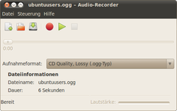
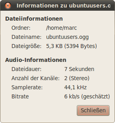

GNOME Soundrekorder
Archivierte Anleitung
Dieser Artikel wurde archiviert, da er - oder Teile daraus - nur noch unter einer älteren Ubuntu-Version nutzbar ist. Diese Anleitung wird vom Wiki-Team weder auf Richtigkeit überprüft noch anderweitig gepflegt. Zusätzlich wurde der Artikel für weitere Änderungen gesperrt.
Zum Verständnis dieses Artikels sind folgende Seiten hilfreich:
Der gnome-sound-recorder ist ein intuitiv zu bedienendes Audioaufnahmeprogramm, das verschiedene Quellen nutzen kann. Je nach installierten Codecs kann das Programm Dateien in folgenden Formaten ablegen: MP4, OGA (OGG Audio), MP3, FLAC, Speex oder WAV.
Mit dem Programm aufgenommene Dateien können mit einem geeigneten Programm geschnitten werden. Für "anspruchsvollere" Aufnahmen empfiehlt sich z.B. die Verwendung von Audacity oder Audio Recorder  .
.
Hinweis:
Obwohl noch in den offiziellen Paketquellen, funktioniert der GNOME-Soundrekorder unter Ubuntu 14.04 nicht mehr (1157654). Ein vollwertiger Ersatz ist der oben erwähnte Audio Recorder.
Installation¶
|  |
| gnome-sound-recorder |
Das Programm ist bis Ubuntu 12.10 in der Standard-Installation enthalten, ansonsten muss folgendes Paket installiert [1] werden:
gnome-media (ab Ubuntu 13.04 in universe)
 mit apturl
mit apturl
Paketliste zum Kopieren:
sudo apt-get install gnome-media
sudo aptitude install gnome-media
Bedienung¶
Bei Ubuntu-Varianten mit einem Anwendungsmenü findet man es anschließend unter "Multimedia -> Audio-Recorder". Alternativ kann es mit dem Befehl gnome-sound-recorder gestartet werden [2].
| Bedienung | ||
| Schaltfläche | Menüpunkt | Beschreibung |
| "Datei -> Neu" | Eine neue Aufnahme wird vorbereitet. | |
| "Datei -> Öffnen" | Eine Datei zur Wiedergabe öffnen. Die Spielzeit wird im Fortschrittsbalken angezeigt. | |
| "Datei -> Speichern" | Die Aufnahme / geöffnete Datei speichern. | |
| "Steuerung -> Aufnahme" | Aufnahme wird gestartet. Es wird die angegebene Aufnahmequelle verwendet. | |
| "Steuerung -> Wiedergabe" | Wiedergabe der Aufnahme / geöffneten Datei. | |
| "Steuerung -> Stop" | Stoppt die Wiedergabe. | |
| - | "Datei -> Speichern unter" | Die derzeit geöffnete Datei unter einem anderen Namen speichern. |
| - | "Datei -> Lautstärkeregler öffnen" | Aufnahmequelle festlegen. |
| - | "Aufnahmeformat:" | Im Menü das gewünschte Ausgabeformat festlegen. |
| - | "Datei -> Eigenschaften" | Dateieigenschaften |
|  |
| Dateieigenschaften |
Dateieigenschaften¶
Über "Datei -> Eigenschaften" erhält man Informationen zur vorliegenden Datei. Diese umfassen den Speicherort, den Dateinamen, die Spieldauer, die Audiokanäle, die verwendete Samplerate sowie die Bitrate. Detailliertere Informationen erhält man in einem Dateimanager.
Tipps¶
Verzeichnisse ändern¶
Um die Standardverzeichnisse zu verändern, mit dem Konfigurationseditor gconf unter "apps -> gnome-sound-recorder -> system-state" die Werte/Pfade ändern: "open-file-directory" verweist auf ~/Musik während in "save-file-directory" das Homeverzeichnis verwendet wird.
Bitrate¶
Um die Bitrate zu ändern, mit gconf unter "system -> gstreamer -> 0.10 -> profiles" das gewünschte Format (z.B. "mp3") auswählen. Im Feld "pipeline" den Wert ändern.
Abtastrate¶
Die Samplerate kann mittels gconf unter "apps -> gnome-sound-recorder -> sample-rate" von 44100 (44,1 kHz / Audio-CD) auf den gewünschten Wert gesetzt werden.
Soundkarte¶
Zum Abgreifen das Tonsignals direkt von der Soundkarte in PulseAudio die entsprechenden Einstellungen vornehmen.
Tastenkürzel¶
| Tastenkürzel | |
| Taste(n) | Funktion |
| Strg + N | Eine neue Aufnahme wird vorbereitet. |
| Strg + R | Die Aufnahme wird gestartet. |
| Strg + P | Wiedergabe der Aufnahme. |
| Strg + X | Wiedergabe unterbrechen. |
| Strg + I | Dateieigenschaften |
| F1 | Hilfe aufrufen. |
| Strg + Q | Das Programm beenden. |
Links¶
gnome-sound-recorder im französischem Ubuntu-Wiki
Audio Recorder Applet - setzt PulseAudio voraus
Audio Recorder - Nachfolger des Audio Recorder Applets
PPA
- ab Ubuntu 15.04
- Erstellt mit Inyoka
-
 2004 – 2017 ubuntuusers.de • Einige Rechte vorbehalten
2004 – 2017 ubuntuusers.de • Einige Rechte vorbehalten
Lizenz • Kontakt • Datenschutz • Impressum • Serverstatus -
Serverhousing gespendet von